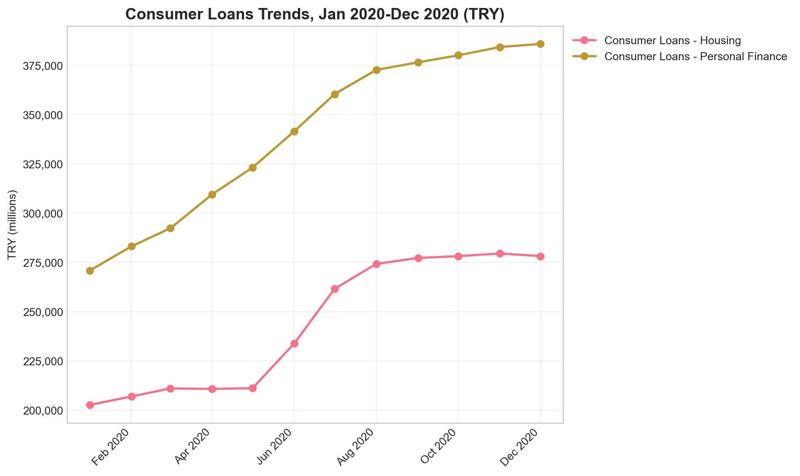

pip install pybrsaGetting Started with Turkish Banking Data
Introduction to the pybrsa package
The ‘pybrsa’ package facilitates programmatic access to Turkish banking sector data from the Turkish Banking Regulation and Supervision Agency (BRSA, known as BDDK in Turkish). The package provides R users with a clean interface to fetch monthly and quarterly banking statistics, financial reports, and sectoral indicators directly from BRSA’s official APIs. This vignette demonstrates a complete workflow: from discovering available data to fetching it and performing a basic analysis.
Installation and Setup
Install pybrsa from PyPI
Or install the development version from GitHub
pip install git+https://github.com/obakis/pybrsa.git# Import the package
import pybrsa
import pandas as pd
import matplotlib.pyplot as plt
import seaborn as sns
from datetime import datetime
# Set plot style
plt.style.use('seaborn-v0_8-whitegrid')
sns.set_palette("husl")Part 1: Discovering Available Data
Before requesting data, it’s useful to explore what tables and banking groups are available from BDDK’s two main portals. Both portals are official sources, but they organize the data differently:
- The Monthly Bulletin Portal provides high-level, summary reports designed for general consumption and quick overviews of monthly trends without any geographic coverage.
- The FinTurk Data System provides granular, detailed data, including statistics broken down by province, whereas the standard Monthly Bulletin offers national-level aggregates.
Important note: Currently, only a single grup_kod can be specified per request. The underlying BDDK API supports multiple grup_kod codes, and this functionality will be added in a future version.
Monthly Bulletin Tables
Monthly Bulletin provides high-level, national aggregate statistics.
# List available tables in the Monthly Bulletin
bulletin_tables = pybrsa.list_tables(source="bddk", lang="en")
print("## Monthly Bulletin Tables")
print(f"**Total tables available:** {len(bulletin_tables)}")
print("\n**First 10 tables:**")
display(bulletin_tables.head(10))
# List available banking groups for the Monthly Bulletin
bulletin_groups = pybrsa.list_groups(source="bddk", lang="en")
print("\n## Monthly Bulletin Banking Groups")
print(f"**Total groups available:** {len(bulletin_groups)}")
print("\n**First 10 groups:**")
display(bulletin_groups.head(10))
Available tables for bddk data:
Table_No Title
1 Balance Sheet
2 Profit and Loss
3 Loans
4 Consumer Loans
5 Sectoral Loan Distribution
6 SME Loans
7 Syndication Securitization Loans
8 Securities
9 Deposits by Type
10 Deposits by Maturity
11 Liquidity Position
12 Capital Adequacy
13 Foreign Currency Position
14 Off-Balance Sheet Transactions
15 Ratios
16 Other Information
17 Foreign Branch Ratios
## Monthly Bulletin Tables
**Total tables available:** 17
**First 10 tables:**| Table_No | Title | |
|---|---|---|
| 0 | 1 | Balance Sheet |
| 1 | 2 | Profit and Loss |
| 2 | 3 | Loans |
| 3 | 4 | Consumer Loans |
| 4 | 5 | Sectoral Loan Distribution |
| 5 | 6 | SME Loans |
| 6 | 7 | Syndication Securitization Loans |
| 7 | 8 | Securities |
| 8 | 9 | Deposits by Type |
| 9 | 10 | Deposits by Maturity |
Available banking groups for bddk data:
Group_Code Name
10001 Sector Total
10002 Deposit Banks
10008 Deposit - Domestic Private
10009 Deposit - Public
10010 Deposit - Foreign
10003 Participation Banks
10004 Development and Investment Banks
10005 Domestic Private Banks
10006 Public Banks
10007 Foreign Banks
## Monthly Bulletin Banking Groups
**Total groups available:** 10
**First 10 groups:**| Group_Code | Name | |
|---|---|---|
| 0 | 10001 | Sector Total |
| 1 | 10002 | Deposit Banks |
| 2 | 10008 | Deposit - Domestic Private |
| 3 | 10009 | Deposit - Public |
| 4 | 10010 | Deposit - Foreign |
| 5 | 10003 | Participation Banks |
| 6 | 10004 | Development and Investment Banks |
| 7 | 10005 | Domestic Private Banks |
| 8 | 10006 | Public Banks |
| 9 | 10007 | Foreign Banks |
FinTurk Tables
FinTurk system provides more granular data, including provincial breakdowns.
# List available tables in FinTurk
finturk_tables = pybrsa.list_tables(source="finturk", lang="en")
print("## FinTurk Tables")
print(f"**Total tables available:** {len(finturk_tables)}")
print("\n**First 10 tables:**")
display(finturk_tables.head(10))
# List available banking groups for FinTurk
finturk_groups = pybrsa.list_groups(source="finturk", lang="en")
print("\n## FinTurk Banking Groups")
print(f"**Total groups available:** {len(finturk_groups)}")
print("\n**First 10 groups:**")
display(finturk_groups.head(10))
# List of cities for FinTurk
cities = pybrsa.list_cities()
print("\n## Available Cities")
print(f"**Total cities:** {len(cities)}")
print("\n**First 10 cities:**")
display(cities.head(10))
Available tables for finturk data:
Table_No Title
1 Loans (Thousand TL)
2 Deposits (Thousand TL)
3 Retail Banking (Thousand TL)
4 Selected Sectoral Loans (Thousand TL)
5 Ratios (%)
6 Branches and Distribution by Population (TL)
7 Gold Loans and Gold Deposits (Thousand TL)
## FinTurk Tables
**Total tables available:** 7
**First 10 tables:**| Table_No | Title | |
|---|---|---|
| 0 | 1 | Loans (Thousand TL) |
| 1 | 2 | Deposits (Thousand TL) |
| 2 | 3 | Retail Banking (Thousand TL) |
| 3 | 4 | Selected Sectoral Loans (Thousand TL) |
| 4 | 5 | Ratios (%) |
| 5 | 6 | Branches and Distribution by Population (TL) |
| 6 | 7 | Gold Loans and Gold Deposits (Thousand TL) |
Available banking groups for finturk data:
Group_Code Name
10001 Sector Total
10002 Deposit Banks
10003 Development and Investment Banks
10004 Participation Banks
10005 Foreign Banks
10006 Public Banks
10007 Domestic Private Banks
## FinTurk Banking Groups
**Total groups available:** 7
**First 10 groups:**| Group_Code | Name | |
|---|---|---|
| 0 | 10001 | Sector Total |
| 1 | 10002 | Deposit Banks |
| 2 | 10003 | Development and Investment Banks |
| 3 | 10004 | Participation Banks |
| 4 | 10005 | Foreign Banks |
| 5 | 10006 | Public Banks |
| 6 | 10007 | Domestic Private Banks |
Available cities for Finturk quarterly data
Use license plate number (plaka) in fetch_finturk functions:
Valid values: 0 (HEPSI/ALL), 1-81, 999 (YURT DISI/ABROAD)
plaka il
0 HEPSİ
1 ADANA
2 ADIYAMAN
3 AFYONKARAHİSAR
4 AĞRI
5 AMASYA
6 ANKARA
7 ANTALYA
8 ARTVİN
9 AYDIN
10 BALIKESİR
11 BİLECİK
12 BİNGÖL
13 BİTLİS
14 BOLU
15 BURDUR
16 BURSA
17 ÇANAKKALE
18 ÇANKIRI
19 ÇORUM
20 DENİZLİ
21 DİYARBAKIR
22 EDİRNE
23 ELAZIĞ
24 ERZİNCAN
25 ERZURUM
26 ESKİŞEHİR
27 GAZİANTEP
28 GİRESUN
29 GÜMÜŞHANE
30 HAKKARİ
31 HATAY
32 ISPARTA
33 MERSİN
34 İSTANBUL
35 İZMİR
36 KARS
37 KASTAMONU
38 KAYSERİ
39 KIRKLARELİ
40 KIRŞEHİR
41 KOCAELİ
42 KONYA
43 KÜTAHYA
44 MALATYA
45 MANİSA
46 KAHRAMANMARAŞ
47 MARDİN
48 MUĞLA
49 MUŞ
50 NEVŞEHİR
51 NİĞDE
52 ORDU
53 RİZE
54 SAKARYA
55 SAMSUN
56 SİİRT
57 SİNOP
58 SİVAS
59 TEKİRDAĞ
60 TOKAT
61 TRABZON
62 TUNCELİ
63 ŞANLIURFA
64 UŞAK
65 VAN
66 YOZGAT
67 ZONGULDAK
68 AKSARAY
69 BAYBURT
70 KARAMAN
71 KIRIKKALE
72 BATMAN
73 ŞIRNAK
74 BARTIN
75 ARDAHAN
76 IĞDIR
77 YALOVA
78 KARABÜK
79 KİLİS
80 OSMANİYE
81 DÜZCE
999 YURT DIŞI
## Available Cities
**Total cities:** 83
**First 10 cities:**| plaka | il | |
|---|---|---|
| 0 | 0 | HEPSİ |
| 1 | 1 | ADANA |
| 2 | 2 | ADIYAMAN |
| 3 | 3 | AFYONKARAHİSAR |
| 4 | 4 | AĞRI |
| 5 | 5 | AMASYA |
| 6 | 6 | ANKARA |
| 7 | 7 | ANTALYA |
| 8 | 8 | ARTVİN |
| 9 | 9 | AYDIN |
Part 2: Fetching Monthly Bulletin Data
Let’s fetch “Table 4: Consumer Loans” for public banks (grup_kod = 10006) between January 2020 and December 2020.
# Fetch data from Monthly Bulletin
my_dat = pybrsa.fetch_bddk(
start_year=2020,
start_month=1,
end_year=2020,
end_month=12,
table_no=4,
grup_kod=10001,
verbose=True
)
print(f"**Dataset dimensions:** {my_dat.shape}")
print(f"**Dataset columns:** {list(my_dat.columns)}")
print("\n**First 5 rows:**")
display(my_dat.head())Fetching table 4 for 12 months: 2020-01 to 2020-12
[1/12] 2020-01... 41 rows
[2/12] 2020-02... 41 rows
[3/12] 2020-03... 41 rows
[4/12] 2020-04... 41 rows
[5/12] 2020-05... 41 rows
[6/12] 2020-06... 41 rows
[7/12] 2020-07... 41 rows
[8/12] 2020-08... 41 rows
[9/12] 2020-09... 41 rows
[10/12] 2020-10... 41 rows
[11/12] 2020-11... 41 rows
[12/12] 2020-12... 41 rows
**Dataset dimensions:** (492, 10)
**Dataset columns:** ['group_name', 'BasitSira', 'Ad', 'BasitFont', 'TRY', 'FX', 'Total', 'grup_kod', 'period', 'currency']
**First 5 rows:**| group_name | BasitSira | Ad | BasitFont | TRY | FX | Total | grup_kod | period | currency | |
|---|---|---|---|---|---|---|---|---|---|---|
| 0 | Banking Sector | 1 | Consumer Loans (2+3+4) | bold | 480482 | 82 | 480564 | 10001 | 2020-01 | TL |
| 1 | Banking Sector | 2 | Consumer Loans - Housing | 202648 | 46 | 202694 | 10001 | 2020-01 | TL | |
| 2 | Banking Sector | 3 | Consumer Loans - Vehicle | 6979 | 0 | 6979 | 10001 | 2020-01 | TL | |
| 3 | Banking Sector | 4 | Consumer Loans - Personal Finance | 270855 | 36 | 270892 | 10001 | 2020-01 | TL | |
| 4 | Banking Sector | 5 | Consumer Loans - Fx Indexed (6+7+8) | bold | 65 | 0 | 65 | 10001 | 2020-01 | TL |
Let’s compare “Consumer Loans - Housing” and “Consumer Loans - Personal Finance” over time.
# Filter and prepare data for visualization
if 'Ad' in my_dat.columns and 'TRY' in my_dat.columns and 'period' in my_dat.columns:
# Filter for specific loan types
cols_to_keep = ["Consumer Loans - Housing", "Consumer Loans - Personal Finance"]
filtered_data = my_dat[my_dat['Ad'].isin(cols_to_keep)].copy()
# Convert period to datetime
filtered_data['date'] = pd.to_datetime(filtered_data['period'] + '-01', format='%Y-%m-%d')
# Create the plot
fig, ax = plt.subplots(figsize=(10, 6))
# Plot each loan type
for loan_type in cols_to_keep:
loan_data = filtered_data[filtered_data['Ad'] == loan_type]
ax.plot(loan_data['date'], loan_data['TRY'],
marker='o', linewidth=2, markersize=6, label=loan_type)
# Format x-axis
ax.xaxis.set_major_locator(plt.matplotlib.dates.MonthLocator(interval=2))
ax.xaxis.set_major_formatter(plt.matplotlib.dates.DateFormatter('%b %Y'))
plt.xticks(rotation=45, ha='right')
# Format y-axis
ax.yaxis.set_major_formatter(plt.matplotlib.ticker.StrMethodFormatter('{x:,.0f}'))
# Add labels and title
ax.set_title('Consumer Loans Trends, Jan 2020-Dec 2020 (TRY)', fontsize=14, fontweight='bold')
ax.set_xlabel('')
ax.set_ylabel('TRY (millions)')
ax.legend(loc='upper left', bbox_to_anchor=(1, 1))
ax.grid(True, alpha=0.3)
plt.tight_layout()
plt.show()
print(f"**Summary statistics for selected loan types:**")
summary_stats = filtered_data.groupby('Ad')['TRY'].agg(['mean', 'min', 'max', 'std']).round(2)
display(summary_stats)
else:
print("Required columns not found in the dataset")
**Summary statistics for selected loan types:**| mean | min | max | std | |
|---|---|---|---|---|
| Ad | ||||
| Consumer Loans - Housing | 243789.00 | 202648 | 279527 | 33553.41 |
| Consumer Loans - Personal Finance | 340054.25 | 270855 | 385882 | 42641.89 |
Part 3: Fetching Granular FinTurk Data
Now let’s explore the more detailed FinTurk data. We’ll fetch “Table 2: Deposits” for all banks (grup_kod = 10001), all provinces over 2023 and 2024.
# Fetch data from FinTurk
my_dat2 = pybrsa.fetch_finturk(
start_year=2023,
start_month=3,
end_year=2024,
end_month=12,
table_no=2,
grup_kod=10001,
il=0, # 0 means all provinces
verbose=False
)
print(f"**Dataset dimensions:** {my_dat2.shape}")
print(f"**Dataset columns:** {list(my_dat2.columns)}")
print("\n**First 5 rows:**")
display(my_dat2.head())**Dataset dimensions:** (656, 15)
**Dataset columns:** ['grup_kod', 'Yıl', 'Ay', 'il_adi', 'Grup', 'Tasarruf Mevduatı', 'Tasarruf Mevduatı (TL)', 'Tasarruf Mevduatı (DTH)', 'Diğer Mevduat', 'Diğer Mevduat (TL)', 'Diğer Mevduat (DTH)', 'Toplam Mevduat', 'plaka', 'period', 'table_no']
**First 5 rows:**| grup_kod | Yıl | Ay | il_adi | Grup | Tasarruf Mevduatı | Tasarruf Mevduatı (TL) | Tasarruf Mevduatı (DTH) | Diğer Mevduat | Diğer Mevduat (TL) | Diğer Mevduat (DTH) | Toplam Mevduat | plaka | period | table_no | |
|---|---|---|---|---|---|---|---|---|---|---|---|---|---|---|---|
| 0 | 10001 | 2023 | 3 | ADANA | SEKTÖR | 101555827 | 68165445 | 33390382 | 40948954 | 29321746 | 11627208 | 142504781 | 1 | 2023-03 | 2 |
| 1 | 10001 | 2023 | 3 | ADIYAMAN | SEKTÖR | 14189512 | 8769470 | 5420042 | 4133270 | 3422143 | 711127 | 18322782 | 2 | 2023-03 | 2 |
| 2 | 10001 | 2023 | 3 | AFYONKARAHİSAR | SEKTÖR | 26182581 | 13630002 | 12552579 | 7218373 | 5476164 | 1742209 | 33400954 | 3 | 2023-03 | 2 |
| 3 | 10001 | 2023 | 3 | AĞRI | SEKTÖR | 4541209 | 2860903 | 1680306 | 1495488 | 1246086 | 249402 | 6036697 | 4 | 2023-03 | 2 |
| 4 | 10001 | 2023 | 3 | AKSARAY | SEKTÖR | 22535449 | 10411079 | 12124370 | 4662855 | 3259852 | 1403003 | 27198304 | 68 | 2023-03 | 2 |
FinTurk data includes a province column (il). Let’s examine the share of selected provinces in total deposits ove 2020-2024 period.
Part 4: Saving Your Results
The save_data() function allows you to export results in various formats for use in other tools.
import pybrsa
import tempfile
# Save to different formats
pybrsa.save_data(my_dat, "filename_you_prefer", format="csv")
pybrsa.save_data(my_dat, "filename_you_prefer", format="pkl")
pybrsa.save_data(my_dat, "filename_you_prefer", format="xlsx")
# Save to Parquet
my_dat.to_parquet("filename_you_prefer.parquet", index=False)
# With tempfile
temp_path = pybrsa.tempfile_base()
pybrsa.save_data(my_dat, temp_path, format="csv")
print(f"Data saved to: {temp_path}.csv")Next Steps
This vignette demonstrated the basic workflow of the pyrbrs package. To learn more:
- Explore all functions in the package API reference
- Try different tables and banking groups using
list_tables()andlist_groups(). - Check out the
rbrsapackage for similar functionality in R.